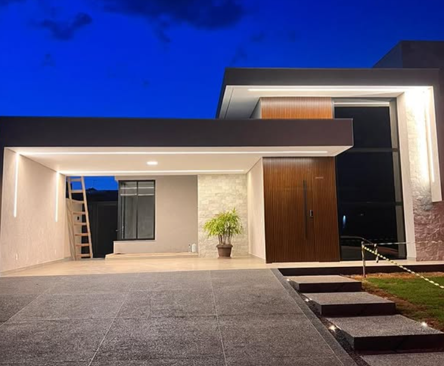
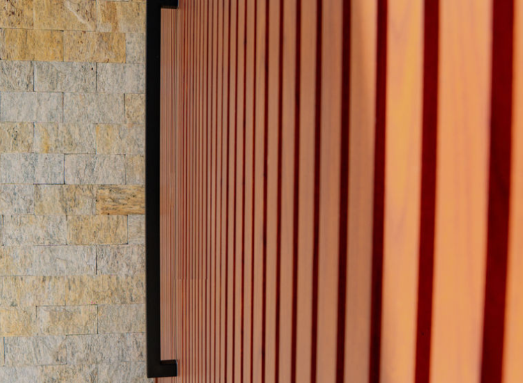
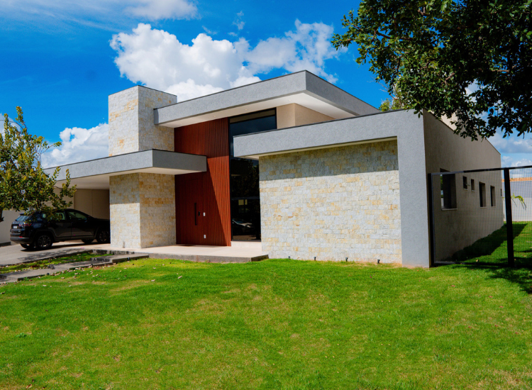
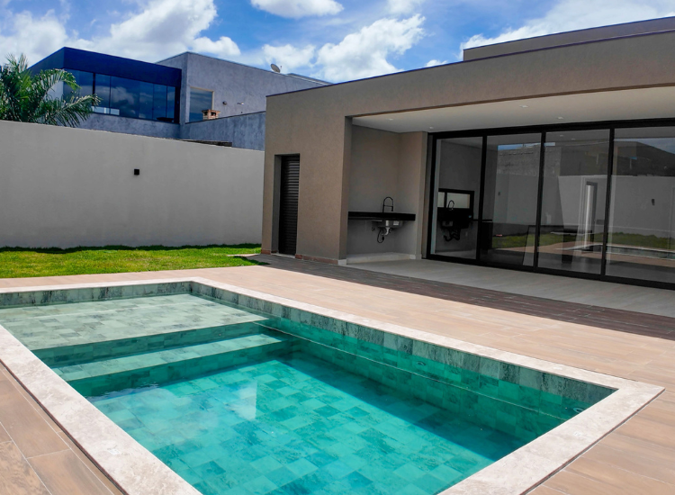
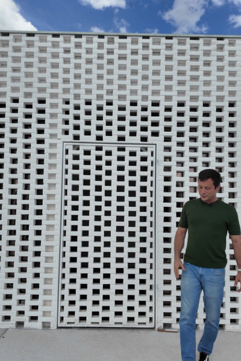
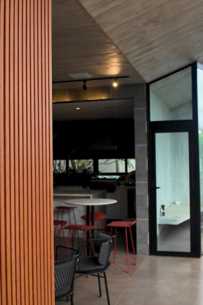
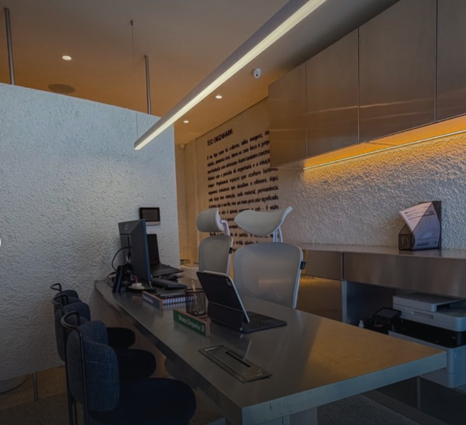
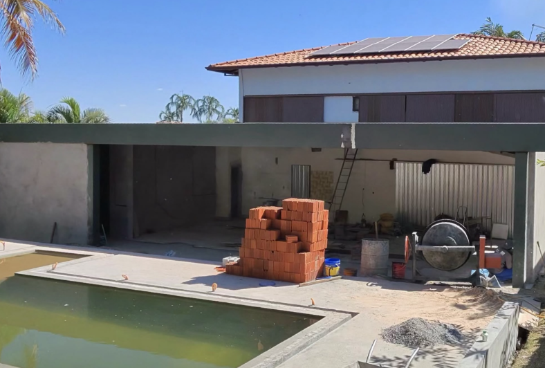
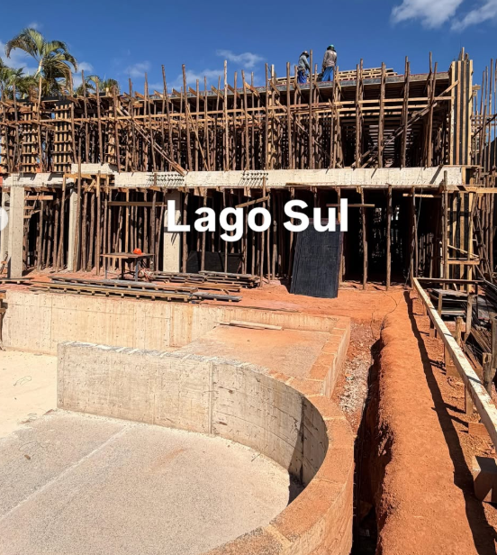
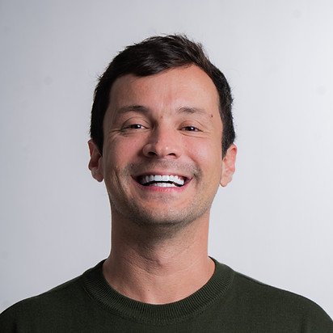

01OBRAS & PROJETOS

TEJO / RESIDENCIALObras residenciais
Execução de projetos voltados a moradias, com atenção ao planejamento e ao acabamento.
A Tejo Engenharia transforma obras residenciais e comerciais em realidade com planejamento, acompanhamento próximo e compromisso com a excelência.





Construímos seu sonho. Temos a responsabilidade e o compromisso de entender suas necessidades e transformar esse sonho em realidade.
Fundada em 2015, a Tejo Engenharia atua com soluções completas para construção civil e reformas, conectando técnica, proximidade e cuidado em cada etapa.

TEJO / RESIDENCIALExecução de projetos voltados a moradias, com atenção ao planejamento e ao acabamento.

TEJO / COMERCIALConstrução e adequação de espaços comerciais com foco em funcionalidade e qualidade.

TEJO / REFORMASSoluções para renovar ambientes com organização, acompanhamento e cuidado técnico.

TEJO / ENGENHARIACondução das etapas da obra para transformar necessidades reais em entregas consistentes.
Uma atuação orientada por excelência e atenção aos detalhes de execução.
Escuta das necessidades do cliente para transformar objetivos em decisões práticas.
Uma condução ética e responsável para gerar patrimônio, segurança e legado.
Escuta das necessidades e entendimento do que o projeto precisa resolver.
Organização das decisões técnicas para transformar intenção em plano.
Coordenação da obra com acompanhamento, organização e controle.
Conclusão com atenção aos detalhes e compromisso com o resultado.
Conheça algumas das obras apresentadas pela Tejo Engenharia e veja de perto a identidade de cada projeto.

Uma residência de presença marcante, com integração entre arquitetura, iluminação e paisagem.

Gestor e empreendedor à frente da Tejo Engenharia, com atuação pautada por ética, proximidade e busca constante pela excelência.
Mais do que obras, a empresa busca entregar confiança, patrimônio e relações sólidas.
Fale com a Tejo Engenharia e dê o próximo passo com uma equipe preparada para orientar sua obra.